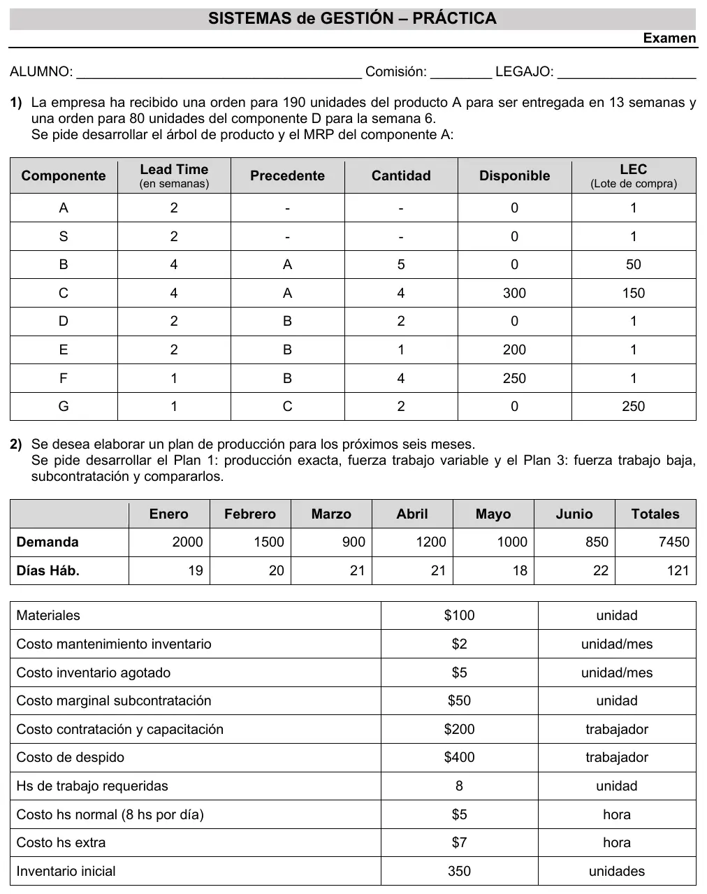

2° parcial 23/10/2026, práctica
2° parcial, 23/10/2026
Enunciado


Propuesta de respuesta
Respuesta no verificada. La propuso Luta Studios con inteligencia artificial y ningún docente la revisó. Puede tener errores.
1. Árbol de producto y MRP de A.
Se calcula nivel por nivel, porque los brutos de cada componente salen de las órdenes planificadas de su padre (2° Parcial, preguntas frecuentes, #2). La recepción planificada cubre los netos en múltiplos del lote, y la emisión es la misma orden adelantada por el tiempo de entrega. Ninguno tiene ingresos programados ni stock de seguridad. Las semanas 1 a 3 no tienen movimiento y no se muestran.
A. LT 2, lote 1, disponible 0. Producto final, con la orden de 190 para la semana 13.
| Semana | 4 | 5 | 6 | 7 | 8 | 9 | 10 | 11 | 12 | 13 |
|---|---|---|---|---|---|---|---|---|---|---|
| Brutos | 190 | |||||||||
| Disponible al final | 0 | 0 | 0 | 0 | 0 | 0 | 0 | 0 | 0 | 0 |
| Netos | 190 | |||||||||
| Recepción planificada | 190 | |||||||||
| Emisión de la orden | 190 |
B. LT 4, lote de 50, disponible 0. Lleva 5 por cada A, así que sus brutos son las órdenes de A por 5.
| Semana | 4 | 5 | 6 | 7 | 8 | 9 | 10 | 11 | 12 | 13 |
|---|---|---|---|---|---|---|---|---|---|---|
| Brutos | 950 | |||||||||
| Disponible al final | 0 | 0 | 0 | 0 | 0 | 0 | 0 | 0 | 0 | 0 |
| Netos | 950 | |||||||||
| Recepción planificada | 950 | |||||||||
| Emisión de la orden | 950 |
C. LT 4, lote de 150, disponible 300. Lleva 4 por cada A.
| Semana | 4 | 5 | 6 | 7 | 8 | 9 | 10 | 11 | 12 | 13 |
|---|---|---|---|---|---|---|---|---|---|---|
| Brutos | 760 | |||||||||
| Disponible al final | 300 | 300 | 300 | 300 | 300 | 300 | 300 | 140 | 140 | 140 |
| Netos | 460 | |||||||||
| Recepción planificada | 600 | |||||||||
| Emisión de la orden | 600 |
D. LT 2, lote 1, disponible 0. Lleva 2 por cada B, más la orden independiente de 80 para la semana 6.
| Semana | 4 | 5 | 6 | 7 | 8 | 9 | 10 | 11 | 12 | 13 |
|---|---|---|---|---|---|---|---|---|---|---|
| Brutos | 80 | 1900 | ||||||||
| Disponible al final | 0 | 0 | 0 | 0 | 0 | 0 | 0 | 0 | 0 | 0 |
| Netos | 80 | 1900 | ||||||||
| Recepción planificada | 80 | 1900 | ||||||||
| Emisión de la orden | 80 | 1900 |
E. LT 2, lote 1, disponible 200. Lleva 1 por cada B.
| Semana | 4 | 5 | 6 | 7 | 8 | 9 | 10 | 11 | 12 | 13 |
|---|---|---|---|---|---|---|---|---|---|---|
| Brutos | 950 | |||||||||
| Disponible al final | 200 | 200 | 200 | 0 | 0 | 0 | 0 | 0 | 0 | 0 |
| Netos | 750 | |||||||||
| Recepción planificada | 750 | |||||||||
| Emisión de la orden | 750 |
F. LT 1, lote 1, disponible 250. Lleva 4 por cada B.
| Semana | 4 | 5 | 6 | 7 | 8 | 9 | 10 | 11 | 12 | 13 |
|---|---|---|---|---|---|---|---|---|---|---|
| Brutos | 3800 | |||||||||
| Disponible al final | 250 | 250 | 250 | 0 | 0 | 0 | 0 | 0 | 0 | 0 |
| Netos | 3550 | |||||||||
| Recepción planificada | 3550 | |||||||||
| Emisión de la orden | 3550 |
G. LT 1, lote de 250, disponible 0. Lleva 2 por cada C, así que sus brutos son las órdenes de C por 2.
| Semana | 4 | 5 | 6 | 7 | 8 | 9 | 10 | 11 | 12 | 13 |
|---|---|---|---|---|---|---|---|---|---|---|
| Brutos | 1200 | |||||||||
| Disponible al final | 0 | 0 | 0 | 50 | 50 | 50 | 50 | 50 | 50 | 50 |
| Netos | 1200 | |||||||||
| Recepción planificada | 1250 | |||||||||
| Emisión de la orden | 1250 |
| Semana | Órdenes a emitir |
|---|---|
| 4 | 80 de D |
| 5 | 1900 de D y 750 de E |
| 6 | 3550 de F y 1250 de G |
| 7 | 950 de B y 600 de C |
| 11 | 190 de A |
Quedan sobrantes por el lote. De C entran 600 para 460 netos y sobran 140. De G entran 1250 para 1200 y sobran 50.
2. Plan 1 y Plan 3. Sin propuesta. El método de cálculo de los planes agregados no está en el Drive. El apunte solo fija las hipótesis, personal estable, costos variables según la modalidad y costo variable unitario que no depende de los recursos (Preguntas frecuentes vFinal, #14).
Respuesta no verificada. Puede tener errores.
Se armó con 2° parcial, secciones Cómo funciona un MRP, La tabla de cada artículo y Lotes, con los problemas resueltos de Chase, págs. 612 y 613.
Quedó en duda: S aparece en la tabla sin padre, sin cantidad y sin pedido, así que no tiene requerimientos y quedó afuera. El LEC se tomó como lote múltiplo, que se pide en cantidades de 50, 150 o 250. Si tu comisión lo usa como lote fijo por orden, C y G llevan varias órdenes en la misma semana y las cantidades no cambian. La orden de 80 de D se sumó a sus brutos de la semana 6. «MRP del componente A» se leyó como el MRP de A y de todo su árbol. La fila de disponible incluye lo que entra por la recepción planificada, como el saldo proyectado de Chase.
¿Cómo te fue?
Marcá cada tema del examen.
- MRPCómo funciona un MRP, en 2° parcial
- Plan agregadoCómo viene el examen, en 2° parcial